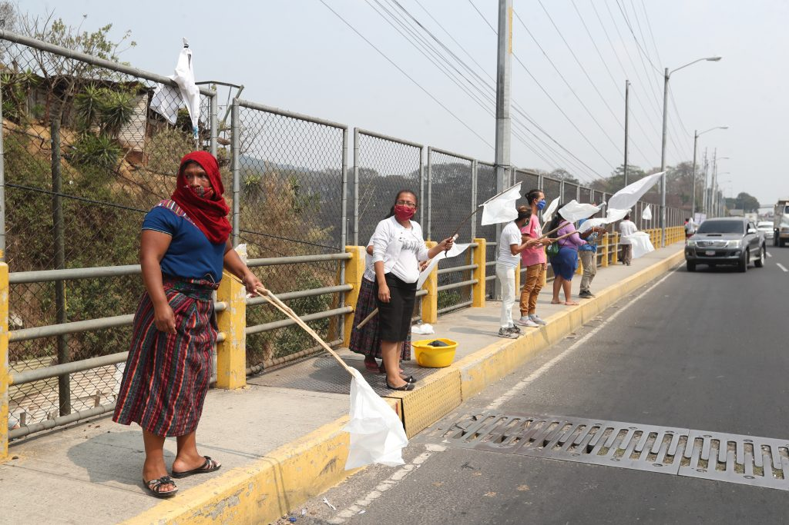
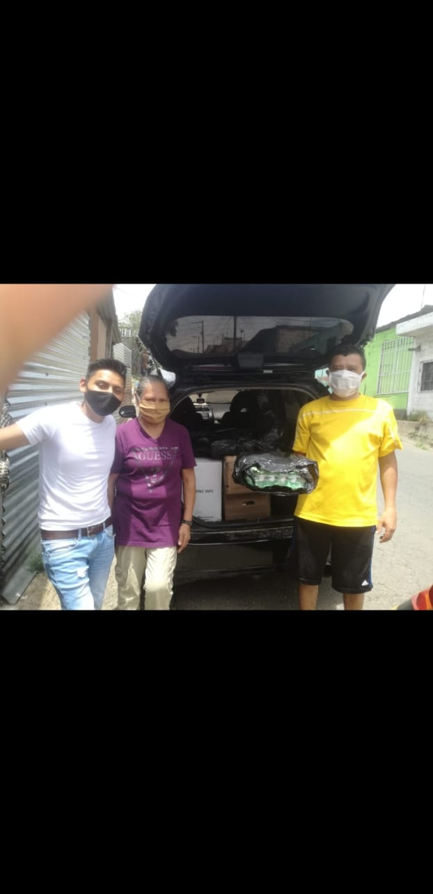
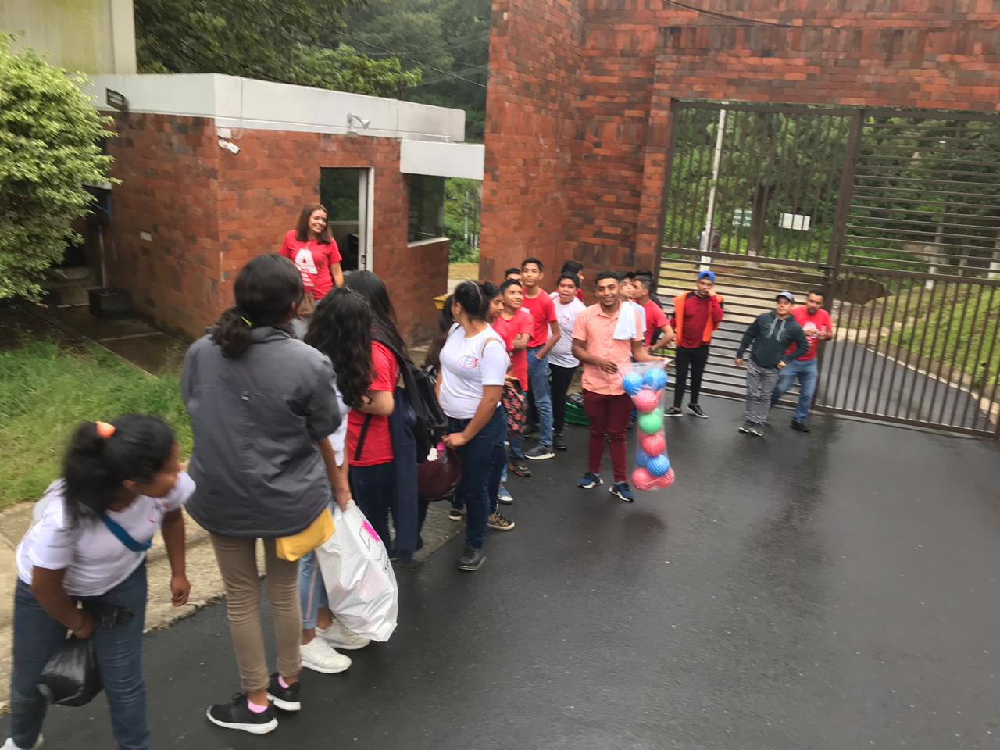
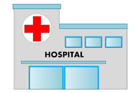
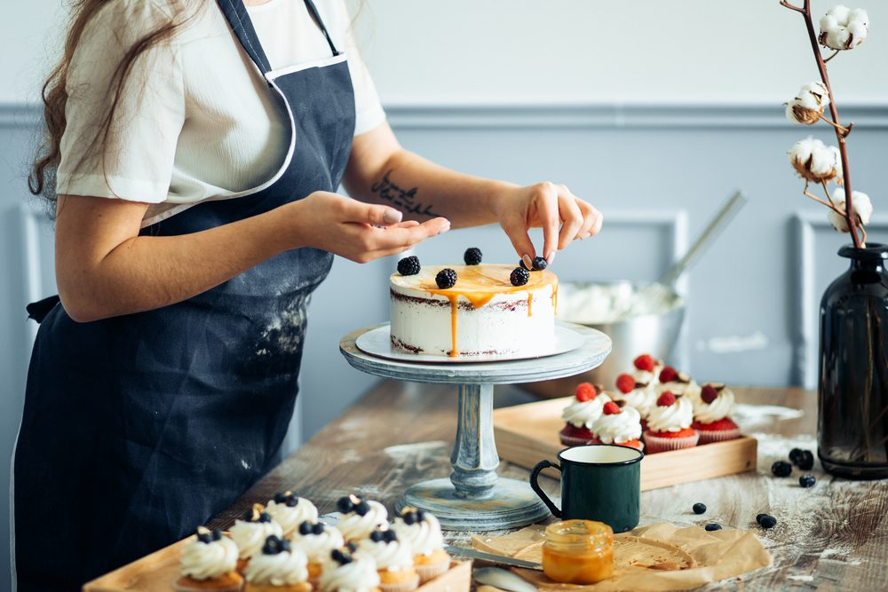

mi gran experiencia fue este año ya que con la venida de esta pandemia hubieron
mucchas persona que se quedaron sin tranbajo y ademas ya habian personas sin empleo
y muchas personas tuvieron las necesidad de salir alas calles con banderas blancas y pidiendo ayuda.
Otras personas vendiendo en las calles mi experiencia en este caso poder salir alas calles y ver la realidad
delo que actualmente estamos pasando y poder da poco de lo qque uno tenemos que ver la alegria de una
persona con un quetzal que para unos puede ser poco pero para otros es mucho .
mi satifaccion es que pudimos ayudar auna familia con bajos recursos con una despensa

esta experiencia me gusto mucho por que creo que tenia un pensamiento de que las personas infectdas
de cualquier enfermedad no habia que convivir con ellas .y Se me dio la oportunidad de poder ir a un lugar donde
habin muchpos niños y jovenes e incluso bebes donde padecian de sida y para mi fue algo que me hizo cambiar
mi pensamiento y que solo por estar padecindo de esta enfermedad no es una persona menos si no que ellos son
una persona como todos nosotros y podemmos convivir con ellos.

 Entrar a un hospital y ver tantas personas
internadas.
poder ganarme una beca y poder sacar adelante el curso y
poder aprener a hacer diferentes clases de pasteles y obtener un diploma.
